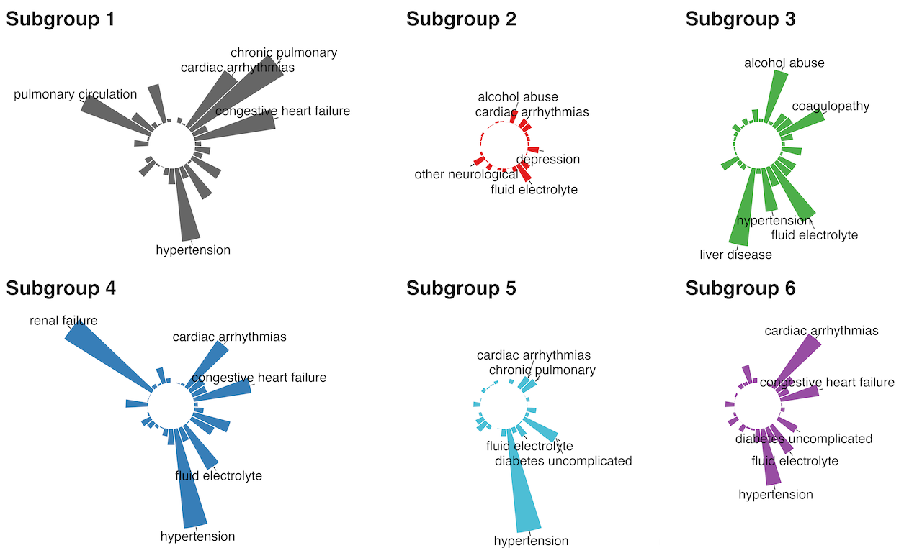

Sepsis is a life-threatening medical emergency triggered by an extreme, dysregulated immune response to infection. In the high-stakes environment of the Intensive Care Unit (ICU), sepsis is a primary driver of mortality because of its deceptive and rapid progression; for every hour that targeted treatment is delayed, the risk of death increases by approximately 7.6%.
Developing a predictive model is essential because it transforms the ICU from a reactive environment to a proactive one. By leveraging real-time physiological data to identify high-risk patterns 1–4 hours before clinical onset, our model provides a critical window for physicians to initiate life-saving interventions, improving patient survival rates.
MIMIC-IV Based Research
Sensitivity
Specificity
Precision
Precision Lift
| Component | Specification |
|---|---|
| Data Source | MIMIC-IV (26,105 ICU Stays) |
| Observation Unit | 940,734 ICU-hour observations |
| Classifier | Random Forest (Stay-level split) |
Utilizing high-resolution clinical events for hourly sepsis prediction.
Our study is powered by the Medical Information Mart for Intensive Care IV (MIMIC-IV) database, a massive, de-identified repository of real-world clinical data from patients admitted to the Beth Israel Deaconess Medical Center. This dataset offers a standardized platform for developing early warning systems under realistic critical care conditions.
While MIMIC-IV covers broad hospital data, our research exclusively utilizes the ICU Module. This allows us to access high-resolution, timestamped clinical events and hourly physiologic measurements essential for tracking rapid sepsis deterioration.
chartevents Table Structure
Primary source for vital signs and physiologic measurements in the ICU.
| Column Name | Data Type |
|---|---|
subject_id | INTEGER |
hadm_id | INTEGER |
stay_id | INTEGER |
caregiver_id | INTEGER |
charttime | TIMESTAMP(0) |
storetime | TIMESTAMP(0) |
itemid | INTEGER |
value | VARCHAR(200) |
valuenum | DOUBLE PRECISION |
valueuom | VARCHAR(20) |
warning | SMALLINT |
Organ Function
Coagulation
Hourly Engineering: Raw measurements aggregated into Mean, Median, Min, Max, Std Dev, and Count statistics.
From raw clinical data to actionable predictive insights.
Clinical data is inherently messy and sparse. To prepare the 940,734 ICU-hour observations for our Random Forest classifier, we implemented a rigorous cleaning pipeline:
balanced_subsample class weights to address the low (4.5%) event prevalence.
To ensure the model is truly predictive and not retrospective, we applied two critical constraints:
stay_id rather than individual rows, ensuring no patient data appeared in both training and test sets.Addressing patient heterogeneity through Latent Class Analysis (LCA).

Distribution of chronic conditions across identified latent classes.
Most septic patients possess multiple chronic diseases which cause their bodies to respond differently when an infection begins. Our framework uses Latent Class Analysis (LCA) to identify shared chronic disease patterns.
Layered Modeling: By combining phenotype context with pre-onset trajectory analysis, the model captures longer-term baseline vulnerability alongside short-term acute physiologic changes.
Pulmonary circulation, chronic pulmonary issues, and hypertension.
Fewer comorbidities; identifiers include alcohol abuse and depression.
Liver disease, alcohol abuse, and fluid electrolyte instability.
Renal failure, congestive heart failure, and hypertension.
Uncomplicated diabetes often paired with fluid electrolyte issues.
Congestive heart failure, cardiac arrhythmias, and hypertension.
In sepsis care, False Negatives (missing a septic patient) are the most dangerous outcome. Our model is specifically tuned to prioritize sensitivity to ensure these high-risk cases are not overlooked.
*Metrics derived from hold-out stay-level test set.
| Model | ROC-AUC | PR-AUC | F1 |
|---|---|---|---|
| Random Forest | 0.842 | 0.925 | 0.862 |
| DNN | 0.976 | 0.643 | 0.620 |
| RNN | 0.920 | 0.380 | 0.428 |
| Logistic Regression | 0.736 | 0.140 | 0.0 |
While the DNN achieved a higher ROC-AUC (0.976), the Random Forest was selected as the optimal clinical tool due to its significantly higher PR-AUC (0.925) and F1 Score (0.862).
From high-fidelity research to proactive clinical intervention.
Our investigation into the MIMIC-IV ICU Module demonstrates that an hour-level prediction framework can successfully forecast sepsis onset 1–4 hours in advance.
Our next primary objective is to transition this framework from a research environment to a live clinical tool.
We are currently collaborating with a partner team to deploy our Random Forest model on AWS via an API inference service.
We are developing a Clinical Decision Support Dashboard. By integrating our phenotype-aware risk scores into this dashboard, we aim to provide ICU doctors with proactive alerts, enabling life-saving interventions before clinical sepsis onset occurs.
Samuel Mahjouri • Utkarsh Lohia • Juntong Ye • Kate Zhou • Kyle Shannon (Mentor)
University of California, San Diego | Halıcıoğlu Data Science Institute